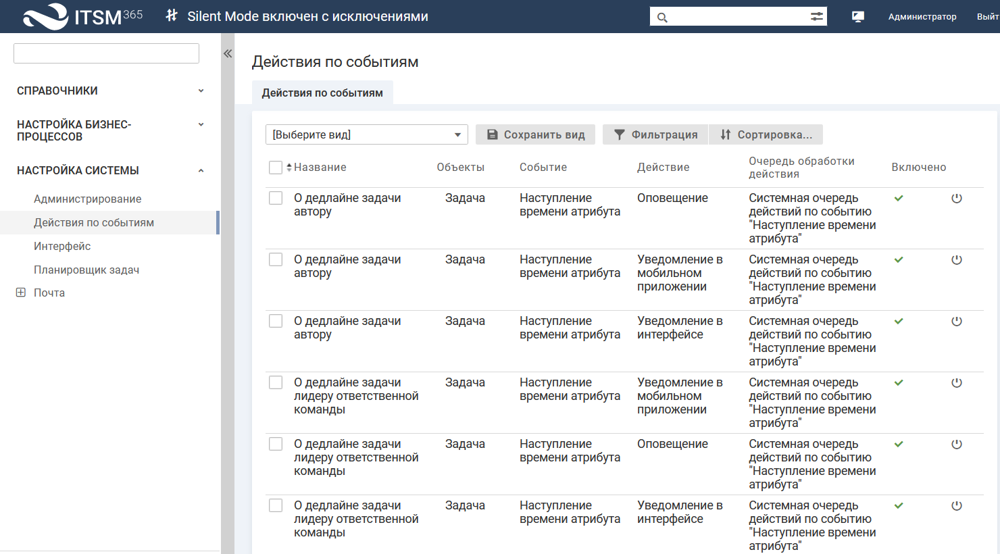
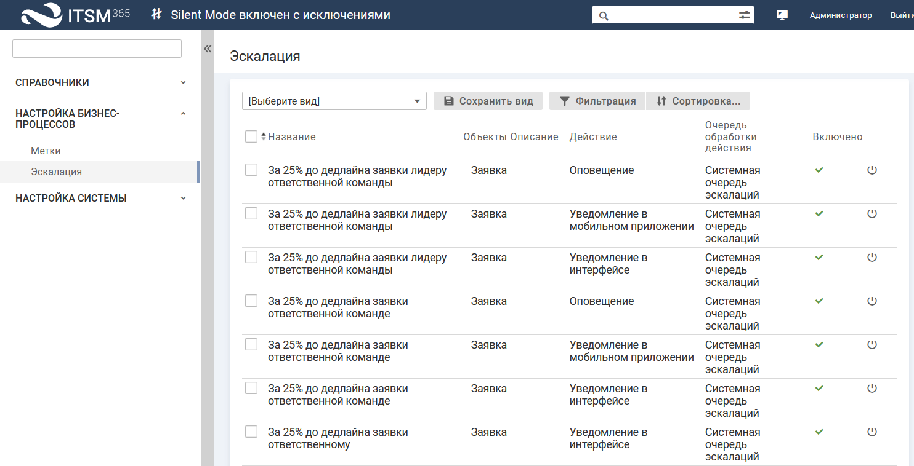
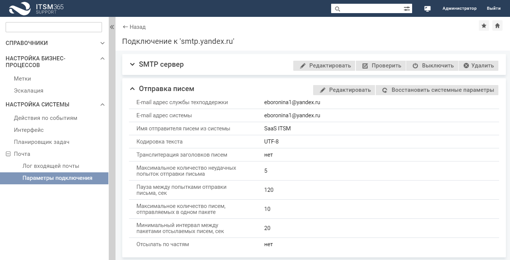
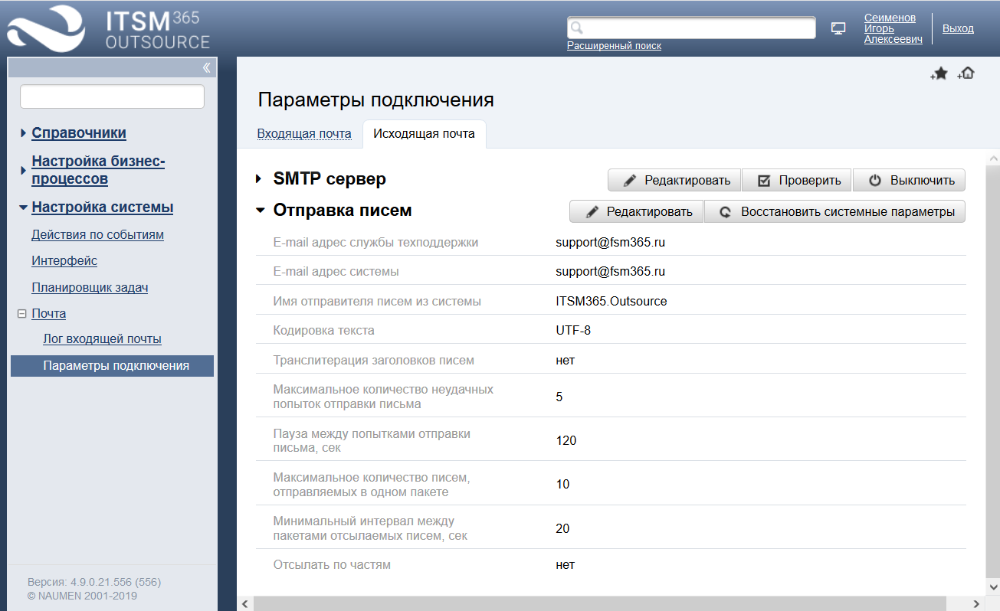

Настройка оповещений по email и уведомлений в интерфейсе
Настройка оповещений по email и уведомлений в интерфейсе
Для эффективной работы сервисного подразделения и своевременного информирования сотрудников о выполнении каких-либо действий в системе используются оповещения по электронной почте и пуш-уведомления в интерфейсе
Группы оповещений по email и пуш-уведомлений в интерфейсе
В
-
Оповещения и пуш-уведомления о событиях с объектами системы: добавление объекта, смена статуса и прочее.
Подробное описание отключения оповещений и пуш-уведомлений, см.

Страница действия по событиям
-
Оповещения о наступлении дедлайна заявки, задачи или согласования.
Подробное описание отключения оповещений, см.

Интерфейс настройки. Раздел "Эскалация"
Подпись к оповещениям и возможность отправки оповещений незарегистрированным пользователям настраиваются в карточке компании на вкладке "Настройки", см.
Настройка исходящей почты
Для использования оповещений в настройках системы заполните параметры сервера исходящей почты и параметры отправки писем.
Подключение к серверу исходящей почты
Чтобы заполнить параметры исходящей почты, перейдите в интерфейс технолога (иконка в правом верхнем углу экрана), в раздел "Настройка системы" → "Почта" → "Параметры подключения" (вкладка "Исходящая почта") укажите параметры подключения к серверу исходящей почты.
Подключение к серверу исходящей почты возможно по протоколам SMTP и EWS.
| Параметры/Протокол | SMTP | EWS |
|---|---|---|
|
Сервер |
IP адрес или DNS имя сервера исходящей почты |
IP адрес или DNS имя сервера исходящей почты |
|
Протокол |
SMTP |
EWS |
|
Порт |
Порт, соответствующий типу соединения (цифрами) |
— |
|
Протокол шифрования |
Возможные значения: "SSL", "TLS" или "Без шифрования" |
— |
|
Аутентификация SMTP |
При необходимости аутентификации на SMTP сервере установите флажок (данное требование определяется настройками SMTP сервера). По умолчанию аутентификация SMTP не включена |
— |
|
Аутентификация OAuth2 |
— |
При необходимости использования для авторизации протокола OAuth2 установите флажок. Данный тип аутентификации позволяет подключаться без использования пароля на прямую. Для подключения используются токены доступа полученные из AzureAD. Если флажок включен, то на форме отображаются дополнительные параметры:
Значения параметров заполняются данными, полученными при регистрации приложения в Azure AD |
|
Логин |
Имя пользователя для отправки сообщений |
Имя пользователя для отправки сообщений |
|
Пароль |
Пароль для отправки сообщений через SMTP-сервер |
Пароль для отправки сообщений. При включенном флажке "Аутентификация OAuth2" поле скрывается |
Параметры "Логин" и "Пароль" имеют значение лишь при включенном параметре "Аутентификация SMTP".
Настройка параметров отправки писем
Текущие параметры отправки писем отображаются в карточке подключения.
 
Карточка подключения к серверу исходящей почты
Чтобы изменить параметры отправки писем, нажмите кнопку "Редактировать" в блоке "Отправка писем". На форме редактирования заполните параметры отправки писем и нажмите кнопку "Сохранить".
Параметры отправки писем:
- E-mail адрес службы техподдержки — адрес электронной почты, который будет отображаться в поле "Обратный адрес (Reply-to)" письма, отправляемого системой.
- E-mail адрес системы — адрес электронной почты, который будет отображаться в поле "От кого (From)" письма, отправляемого системой.
- Имя отправителя писем из системы — имя, которое будет отображаться в поле "От кого (From)" вместе с "E-mail адресом системы".
Параметры "E-mail адрес службы техподдержки", "E-mail адрес системы" и "Имя отправителя писем из системы" являются обязательными для заполнения, иначе отправка писем не будет работать.
Подробное описание настройки параметров сервера исходящей почты и параметров отправки писем
- Быстрый старт. Шаг 4.